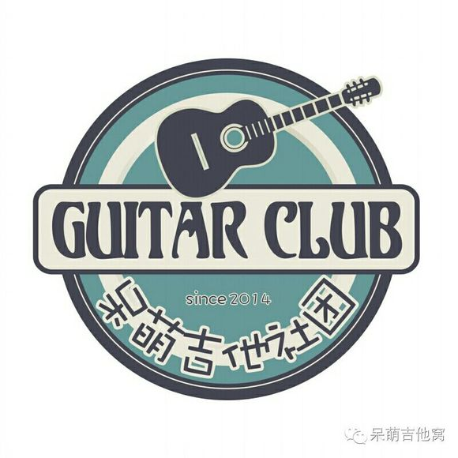

有很多人问我吉他入门该怎么练习，选琴该怎么选，我就在这里做一些分享。PS：此篇为民谣吉他指南，古典吉他或者别的吉他简单看看就好了。
选琴
选琴这一点，我觉得还是有必要说的，因为新手一般都会买一些便宜一点的新手琴，看个人的兴趣再日后考虑是否买好一些的琴。可这里就有一个非常矛盾的地方，因为新手琴做工都很渣，尤其是一些新手琴弦距特别高，导致按弦的时候非常难按，经常一个F和弦都按不出来，很多新手都再次放弃吉他。所以说吉他入门很难，我觉得还是有一些水分的，确实很难，但没有那么难。
我在这里并不是说要买贵的琴，其实有很多不错的新手琴（500-1000）的价位的琴手感都不错（比如我们呆萌吉他社进的那批琴就很好），只是音质很渣而已，但是对于新手来说足矣，弦距刚刚好，手按起来也不会那么痛。所以推荐买吉他的时候最好找个懂吉他的熟人陪你去，当然也可以来从我们呆萌吉他社买，不过我们的受众对象只是工大的学生，哈哈哈~~不过我也建议买500-1000的琴当作新手琴，如果要好一点的话，2000+，因为在我眼里2000下的琴都一样，当然也许我摸过的2000下的琴都一样。至于牌子，就百度吧，Tayler什么的。
这里可能有个误区，好琴和差琴的区别不只是音色，比如材料方面就有合板，面单，全单，这些区别还是很大的，一弹就知道了。好的吉他首先弦距刚刚好，不会因为弦距过低打品，也不会弦距过高而难按，还有低音浑厚，高音亮丽，比如一些指弹吉他的高超技巧，Palm,击弦，闷弦，Slap,Pm,Am,T.Harm（点泛音）等等等等，好的吉他使用起来就很轻松，相反差吉他就很难弄出来，而且根本弄不出来，比如Slap等等等等。
入门练习
- 当你有了一把吉他，OK，你还需要一本书，比如《吉他三月通》我当初就是用的这本，不过我不是自学，我是在琴行学的哈哈。
- 当你有了书，先认识认识吉他，什么是弦，品，琴钮，琴头，琴颈，六角扳手是用来干嘛的，弹吉他的姿势，左手是用来干嘛的，右手又是用来干嘛的，（如果是左撇子的话，左右手相反，而且六根弦还得调换顺序，建议去琴行找专业的老师，毕竟特殊）等等等等。比如这个网站。
- 当你对吉他有了认识，那么学学六线谱怎么看，别慌，六线谱虽然比五线谱多了一线，但是难度却一个在地上一个在天上，保证认真看3分钟就学会了。
- 当你学会看六线谱了，这个时候你应该左右手的熟练度，练习的方法有很多种，比如音阶练习（推荐！），53231323（稍微进阶！），爬格子（这个练习方法可以练习一辈子！）等等等等。
我来说明一下这三种练习方式：- 音阶练习。（每天10遍，很快反正我一遍可能就1-3s）
就是do re mi fa so la si ,有时会用1234567代替。去百度一下（书上也有），看着吉他音阶谱练习。 - 53231323.（练好为止，练成之后可以尝试加入和弦）
吉他有6根弦，编号123456，最粗的为6弦，最细的为1弦。起初，我们左手不弹，只右手弹，53231323，63231323，43231323这三个不断重复，直到弹好为止。需要注意，建议配合节拍器一起练，因为如果节奏不准的话何谈之后的弹琴弹唱。进阶可以考虑加入和弦，我知道你现在听不懂，等你可以进阶的时候你就懂了。节奏是什么？如何练习呢？简单的来说，如果有四个单音（就是就一个音，比如你弹一根弦就是一个音，两个一起弹就是两个音。也叫和弦了，两个及以上都叫和弦，和弦就是由两个及以上的音组成的），这四个音之间的间隔都是相等的，比如你要在4秒内弹完这四个音，即每个音的时长为1秒。（建议买书看） - 爬格子。（推荐每天半小时，一年爬到吉他大佬）
百度吧，网上应该有很多关于这个的视频教学。
- 音阶练习。（每天10遍，很快反正我一遍可能就1-3s）
- 当你能够弹响，并且很熟练了，你可以弹唱了！比如《当你老了》，不过这个阶段弹唱也只是玩玩，还是有点勉强的。
- 当你很想学弹唱，拿出一点成绩，你可以学扫弦了，扫弦这里对节奏要求很高，就相当于学节奏了，可以在网上找教学视频看。这个阶段可以和弹唱一起练习了，因为扫弦唱歌相对简单很多，我当初花了6-7天的样子就能勉强弹唱《童年》了。
- 当你即会53231323，又会扫弦了，那么你就可以弹唱了，这时候你会发现，基本上所有民谣弹唱的曲子，都是由这两个组合的，最多加一点变化，但不会更难，只会更简单。
方向
一般来说民谣吉他有两个大方向，弹唱和指弹。弹唱就是一边弹一边唱，指弹就是只用手指弹。虽说两个方向，其实可以兼顾的，比如我就是弹唱和指弹都玩的。
弹唱我就不过多介绍了，在我们大中华这个环境下，民谣歌手层出不穷，民谣歌曲深入人心。我来介绍一下指弹。
是不是看起来好牛X？是的，就是很牛。在这里推荐一下我很喜欢的指弹吉他手，日本的较多，松井佑贵，井草圣二，押尾桑，岸部真明，DEPAPEPE太多了我就不列举了，韩国的郑成河，中国的孙培博，李森茂，emmm再想不起来了，我大天朝大神很多的，只是我比较偏向日式指弹罢了。指弹是一种演奏方式，又称作钢弦木吉他演奏，英文为Fingerstyle guitar，是一种吉它加花的奏法，在音乐界非常新兴的项目，而这些手法大多来自民间的继承，结合了弗拉门戈，夏威夷，西班牙等吉他演奏法与打板技巧并不断的创新。 指弹吉他可以用手指弹奏，也是可以用拨片和指套来演奏，与古典吉他最大的不同是，指弹吉他广泛应用许多的调弦法，拍击， 手法完全不受限制，只要能用一把吉他作出任何美妙音乐 皆为Fingerstyle木吉他音乐， 融合现代和声，Jazz ，Blues，Celtic，Country，R&B等风格，并融入演奏者自己之创作与编曲想法。
指弹讲究的是一把吉他弹出2把甚至3、4把吉他的效果、讲究的是音乐性、技巧性。美国传统指弹风格主要是以Ragtime，乡村blues，jazz风格为代表，而欧洲则是以Celtic，地中海风格音乐为主，在演奏方面，传统指弹的弹奏技巧强调对位和声的演奏，以及交替bass的演奏，对位和声主要出现在欧洲的指弹风格中，而交替bass则更多出现在传统美国Ragtime等风格的演奏，当然美国的一些传统指弹风格也很注重对位和声，现代指弹风格则是以Don Ross，风格更多的是New age，funk，Latin等曲风!对比传统指弹演奏技巧,现代指弹演奏技巧方面则注重“音效”有时会运用到效果器，比如大家熟悉的日本演奏家中川砂仁、押尾光太郎等。现代指弹的音色效果出众，演奏时往往伴随打板，敲打泛音，AM，PM，slap等技术 。最后
欢迎加入呆萌吉他社！

{kind=link}